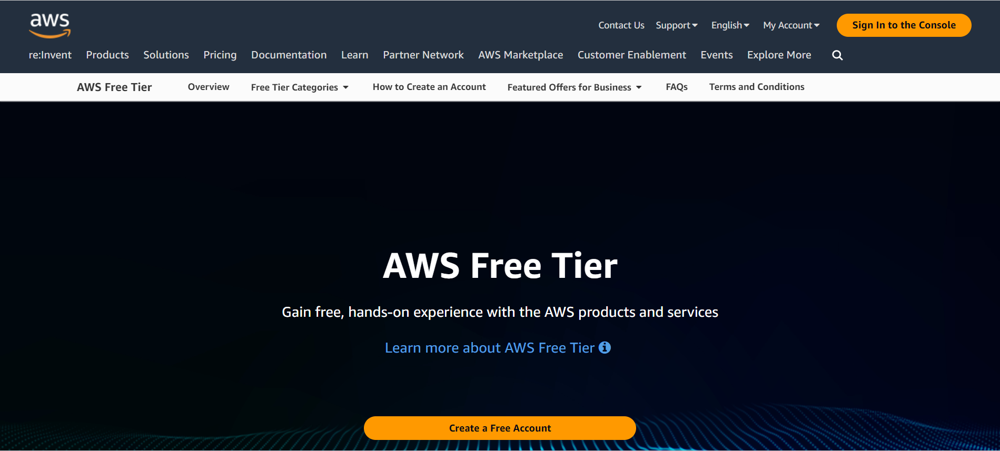

Welcome to another blog post where we will walk through a real-world example Kubernetes project. The Employee Management System is a lightweight, in-memory web application designed to simplify the handling of employee information. Developed using Spring Boot and Thymeleaf, this application enables users to effortlessly add, view, and delete employee records. The intuitive interface provides a smooth experience for managing your workforce without the need for external databases.
Technology Stack:
- Backend: Crafted using Spring Boot, providing a robust and scalable foundation.
- Frontend: Utilizes Thymeleaf for server-side rendering, ensuring dynamic and responsive user interfaces.
- Storage: In-memory storage eliminates the need for an external database, making it a lightweight solution.
Key Features:
- Add Employee: Seamlessly input new employee details through a user-friendly form.
- Employee List: Access a comprehensive list of all employees, each with a unique identifier.
- Delete Employee: Remove employees from the system with a simple click.
In this blog post, we'll explore how to set up an Employee Management System using Spring Boot and then deploy it to Kubernetes using Argo CD for continuous delivery.
Table of Contents:
- Architechture
- Step 1: Setting up AWS Account
- Step 2: Creating EC2 Instances
- Step 3: Configuring Security Groups
- Step 4: SSH To Ec2 Instances And Installation Of Jenkins
- Step 5: Installation Of Sonarqube On To The Ec2 Instance
- Step 6: Install Docker On Ec2 Instance
- Step 7: Installing Argocd On The Minikube Kubernetes Cluster
- Step 8: Jenkins Pipeline Setup
- Step 9: Create An Application In Argo Cd Using The Ui
- Step 9: Clean UP
Architechture
Step 1: Setting up AWS Account
Before we begin, make sure you have an AWS account. If you don't have one, you can sign up for an AWS account here.
Go the link provided and create an account
Step 2: Creating EC2 Instances
Now, let's create EC2 instances to host our application. Follow these steps:
Name the EC2 instance as you wish; in my case, I am naming it "Webserver."
Select Ubuntu as the operating system and T2.large
Select a key pair. If you don't have one, create it; it's simple.
Then launch the EC2 instance.
Wait until the instance state is "running," and the status shows "2/2 checks passed."
Step 3: Configuring Security Groups
Ensure proper security by configuring security groups. Here's how:
Go to security group settings and add "All Traffic" from anywhere. To be frank, it's not advisable to keep it like this, but for the sake of this demo, it's okay. We have SonarQube, Jenkins, and other components, so changing this for a specific port every time can be time-consuming. Therefore, I'm allowing all traffic from anywhere.
Step 4: SSH to EC2 Instances and installation of Jenkins
Navigate to the PEM file location and execute the following command to SSH into the EC2 instance, as shown in the screenshot below.
ssh -i file-name.pem ubuntu@ip-address-of-ec2
If you see this screen, you have successfully SSHed into the EC2 instance.
Now, execute the following command to update and install Java:
sudo apt update && apt install openjdk-11-jre
Note: Please note the addition of sudo before the second apt command to ensure proper permissions for installation.
Wait until the installation is complete. Take your time; there's no need to rush.
Verify the Java installation by runqning the following command:
java -version
This will display information about the installed Java version on your system.
Now, it's time to install Jenkins, where the pipeline will be built – the Continuous Integration (CI) part.
curl -fsSL https://pkg.jenkins.io/debian/jenkins.io-2023.key | sudo tee /usr/share/keyrings/jenkins-keyring.asc > /dev/null
echo deb [signed-by=/usr/share/keyrings/jenkins-keyring.asc] https://pkg.jenkins.io/debian binary/ | sudo tee /etc/apt/sources.list.d/jenkins.list > /dev/null
sudo apt-get update
sudo apt-get install jenkins
Wait until the Jenkins installation has completed.
Now, go and access Jenkins on port 8080. The IP address looks like: http://ip-address-of-ec2:8080
Note: In security group of ec2, Make sure you allow all traffic or Jenkins port 8080 from your IP or anywhere; it's mandatory. Otherwise, you will not be able to access Jenkins.
Go to the directory `/var/lib/jenkins/secrets/initialAdminPassword` to get the Jenkins password.
Copy it and paste it here, Click on Continue
Select Install Suggested Plugins
Wait until the installation has completed.
Click on Skip and contine as admin user
Click on Save and Finish
Click On start using jenkins
Here We Go! 🎉Congratulations🎉 You Have Successfully Installed Jenkins
Installation Of Sonarqube On To The Ec2 Instance
Switch to the root user
sudo su -
Add a user named "sonarqube" and switch to that user
adduser sonarqube sudo su - sonarqube

Install SonarQube and generate a token
apt install unzip wget https://binaries.sonarsource.com/Distribution/sonarqube/sonarqube-9.4.0.54424.zip unzip * chmod -R 755 /home/sonarqube/sonarqube-9.4.0.54424 chown -R sonarqube:sonarqube /home/sonarqube/sonarqube-9.4.0.54424 cd sonarqube-9.4.0.54424/bin/linux-x86-64/ ./sonar.sh start
Access SonarQube in the browser using the default username and password, which are both "admin."
password = admin username = admin
Configure jenkins for sonarqube integration
Generate a token in SonarQube and then paste this token in the Jenkins credentials.By doing this, communication between SonarQube and Jenkins has been established.
Generate a GitHub token and add it to Jenkins to successfully establish communication between them.

Jenkins Credentials Setup
To add GitHub, SonarQube, and Docker credentials in Jenkins, follow these steps:
- Access your Jenkins dashboard.
- Click on "Manage Jenkins" in the sidebar.
- Go to "Manage Credentials."
- Under the "Stores scoped to Jenkins" section, click on "Global credentials (unrestricted)."
- Click "Add Credentials" on the left side of the page.
- For GitHub Credentials:
- Choose "Secret text" as the kind of credentials.
- Enter your GitHub personal access token in the provided field.
- Provide an optional ID and description for the credentials.
- For SonarQube Credentials:
- Choose "Secret text" as the kind of credentials.
- Enter your SonarQube token or other required credentials in the provided field.
- Provide an optional ID and description for the credentials.
- For Docker Hub Credentials:
- Choose "Secret text" as the kind of credentials.
- Enter your Docker Hub credentials (username and password or access token) in the provided field.
- Provide an optional ID and description for the credentials.
- Click "OK" to save the credentials.
Note: Ensure that you use the added credentials appropriately in your Jenkins jobs or pipelines.
To install the necessary plugins in Jenkins, follow these steps:
- Access your Jenkins dashboard.
- Click on "Manage Jenkins" in the sidebar.
- Go to "Manage Plugins."
- Switch to the "Available" tab.
- Search for "Docker Pipeline" in the search box.
- Find the "Docker Pipeline" plugin in the list and check the box next to it.
- Scroll down and also search for "SonarQube Scanner."
- Find the "SonarQube Scanner" plugin and check the box next to it.
- Click "Install without restart" at the bottom of the page.
- Wait for the installation process to complete.
- After installation, restart Jenkins if required.

Note: Ensure that the plugins are successfully installed by checking the "Installed" tab in the "Manage Plugins" section.
Install Docker On Ec2 Instance
Install Docker on the EC2 instance
sudo apt update sudo apt install docker.io
Grant Jenkins and Ubuntu users permissions to Docker daemon
sudo su - usermod -aG docker jenkins usermod -aG docker ubuntu systemctl restart docker
Installing Argocd On the minikube Kubernetes cluster
Launch the Minikube cluster in your local system, not in EC2
For Windows:
minikube start --memory=3000 --driver=hyperv
For macOS:
minikube start --memory=3000 --driver=hyperkit
Install Operator Lifecycle Manager (OLM)
curl -sL https://github.com/operator-framework/operator-lifecycle-manager/releases/download/v0.26.0/install.sh | bash -s v0.26.0
Install Argo CD Operator
kubectl create -f https://operatorhub.io/install/argocd-operator.yaml
Create Argo CD cluster manifest (argocd-cluster.yaml)

apiVersion: argoproj.io/v1alpha1
kind: ArgoCD
metadata:
name: example-argocd
labels:
example: basic
spec: {}
Apply the manifest
kubectl apply -f argocd-cluster.yaml
Get the Argo CD service and change it from ClusterIP to NodePort
kubectl get svc kubectl edit svc #argocd-service-name #Change type: ClusterIP to type: NodePort
Access Argo CD web UI using the NodePort and login with admin credentials

http://ip-address:NodePort
To get the Argocd Credentials:
kubectl get secrets
kubectl edit secret #argocd-secret-name -o=jsonpath='{.data.admin\.password}' | base64 -d
Jenkins Pipeline Setup
Follow these steps to create and build a Jenkins pipeline:
- Access your Jenkins dashboard.
- Click on "New Item" in the sidebar.
- Enter a name for your item (pipeline) and select "Pipeline" as the project type.
- Click "OK" to create the pipeline.
- Configure SCM (Source Code Management):
- Select "Pipeline script from SCM" in the Definition dropdown.
- Choose the appropriate SCM option (e.g., Git).
- Provide the repository URL.
- Specify the branch (e.g., master or main).
- Click "Apply" and then "Save" to save the pipeline configuration.

- Ensure GitHub, SonarQube, and Docker integration:
- Make sure GitHub credentials, SonarQube credentials, and Docker credentials are configured in Jenkins as mentioned in the previous guide.
- Trigger the build:
- Manually initiate the build by clicking "Build Now."
- Wait for the build to complete.
- If there are issues, troubleshoot and reattempt the build as needed.
- Finally, check Docker Hub to see whether the image has been pushed or not.
Now it's time to create an application in Argo CD using the UI.
Follow these steps to create an application in Argo CD using the UI:
- Access the Argo CD web interface.
- Click on "Create Application" in the UI.
- Enter the following details:
- Name:
employee-management - Namespace:
default - Repository URL:
https://github.com/gadagojushiva/employee-management-system - Path:
employee-management-manifest
- Name:
- Click "Create" to initiate the application creation process.
- Argo CD will sync with the Git repository and apply the manifests in the specified path.
- Monitor the application status in the Argo CD UI to ensure successful deployment.
Note: Ensure that the Git repository contains the necessary Kubernetes manifests in the specified path.
Now check in Minikube
kubectl get pods kubectl get svc
You will see the application pod is up and running.
Now, to make the application accessible on the browser:
Create a service for the application:
vim employee-management-service.yml
Add the following to the YAML file:
apiVersion: v1
kind: Service
metadata:
name: employee-management-system
spec:
type: NodePort
ports:
- name: http
port: 80
targetPort: 8080
protocol: TCP
selector:
app: employee-management-system
Apply the service configuration:
kubectl apply -f employee-management-service.yml
Get the services and use the URL provided:
minikube service list
Access the application at the provided URL.
🎉Congratulations on a Successful Deployment!🎉
Congratulations! You've successfully completed the deployment of a Java application onto Kubernetes using ArgoCD. The entire process was streamlined with Jenkins for Continuous Integration (CI).
This integration of tools and technologies showcases the power of modern DevOps practices, enabling efficient development, testing, and deployment workflows.
Feel free to explore and customize further, tailoring these practices to fit the specific needs of your projects. Happy coding!
Clean UP
Don't forget to delete the EC2 Instance
Tips for Navigation:
- Use the table of contents above to jump to specific sections.
- Click on the step numbers in the list to navigate directly to the corresponding content.
- Take advantage of the "Back to Top" button for quick scrolling to the beginning of the page.
About the Developer:
@Gadagoju Shiva This Employee Management System was skillfully developed, and its efficiency was enhanced through the use of ChatGPT, a powerful language model developed by OpenAI. This collaboration enabled rapid development, contributing to the creation of a seamless and resource-efficient in-memory application.